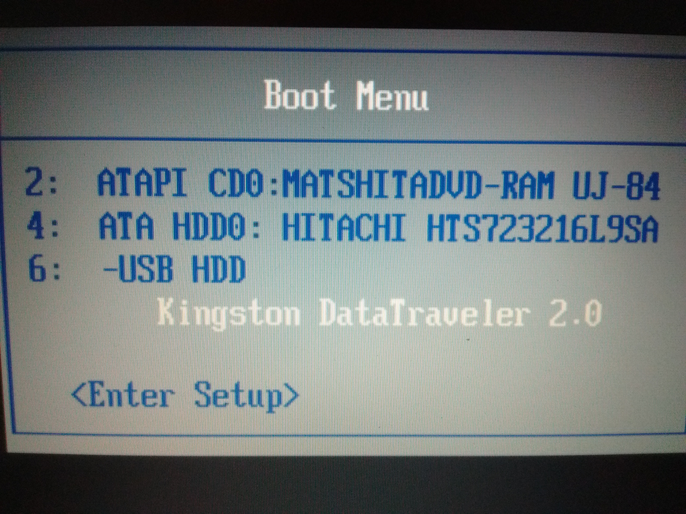

Leap into Linux!
LinuxCon North America 2016 Kids Day
Get into the Boot Menu
- Plug the USB into a port
- Restart the computer
- When the first screen appears, press F12
You should now be looking at the Boot Menu

In the Boot Menu
- Press the arrow-down key until USB is selected
- Press the Enter key
Ubermix is now installing \o/
This will take a few minutes.
When the imaging process is complete,
you will be prompted to press any key to continue.